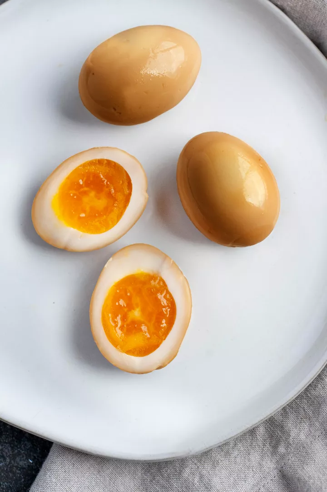

Ingredients
- 1 cup water
- 1/2 cup soy sauce
- 1 tablespoon sugar
- 6 tablespoons mirin
- 2 cloves garlic, smashed
- 1/4-inch piece unpeeled ginger, smashed
- 6 large eggs, cold straight from the fridge
- Ice, for chilling the eggs
Description
Soy sauce eggs are common in several Asian cuisines. The simplest versions are marinated or braised in plain soy sauce. Some are sweetened or include alcohol, usually sake or rice wine. Others are infused with aromatics, from garlic and ginger to 5-spice seasoning.
Additional Resources:
Steps
- Make the marinade:In a small saucepan, add the water, soy sauce, sugar, mirin, garlic, and ginger, and bring to a boil over medium-high heat. Reduce the heat to medium-low to maintain a simmer, swirling the pot once or twice, for 3 to 5 minutes, until the sugar dissolves and the marinade reduces slightly. Transfer the marinade into a heatproof container with a tight-fitting lid and wide enough to hold 6 eggs in a single layer. Set aside to cool.
- Cook the eggs:While the marinade is simmering, fit a medium saucepan with a steamer basket and fill it with enough water to reach the bottom of a steamer basket. Cover the saucepan and bring it to a boil over medium-high heat. Use a slotted spoon, if necessary, to carefully add the eggs into the steamer basket in a single layer. Cover the saucepan and steam the eggs over medium-high heat for 6 to 7 minutes. For a custardy, almost runny yolk, go for 6 minutes. 7 minutes will give you a slightly firmer but still jammy yolk. Don't guess the time! Use a timer!
- Chill the eggs:While the eggs are cooking, make an ice bath. Fill a medium bowl with a lot of ice and cold water, and set it next to the stove. When the eggs are done cooking, use a spoon to immediately transfer them into the ice bath to fully cool.
- Peel the eggs:One egg at a time, use the back of a spoon to tap it all over to crack the shell. Peel the egg starting at the wide bottom end. That’s where the air pocket divot is, making it easier to peel. Dip the eggs into the ice bath to rinse off any stuck-on eggshells. Set the peeled eggs on a paper towel and pat them dry.
- Marinate the eggs:Add the eggs into the marinade, cover, and refrigerate for at least 4 hours and up to 24 hours. The eggs will become saltier in the marinade so don’t let them sit longer than 24 hours. Leftovers should be removed from the marinade and kept in a container with a tight-fitting lid. Don’t discard the marinade—it’s delicious drizzled over rice. Refrigerate for up to 4 days.